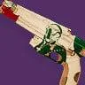

推荐者：
遗忘Melt金枪猎位移+清怪配装
猎人 · 棱镜 · 强度S29 · 凯旋纪念碑
突袭地牢副本，走机制+清怪套装，适用于不要求站点，需要抓钩位移快速走机制的场景
适用环境
标签
# 金枪猎位移+清怪配装 推荐人：遗忘Melt 描述：突袭地牢副本，走机制+清怪套装，适用于不要求站点，需要抓钩位移快速走机制的场景 更新：2026.9.2 场景：突袭、地牢 定位：清怪 分支：棱镜 类别：强度 核心：宣召呼唤 ## 职业 职业：猎人 超能：黄金枪：神枪手 星相：飞升、线织幽灵 碎片：保护琢面、使命琢面、勇气琢面、毁灭琢面、黎明琢面 手雷：抓钩 近战：陷阱炸弹 职业技能：赌徒闪身 ## 武器 异域武器：隐秘追猎 传说武器：宣召呼唤 | 金中藏弹、幼雏 传说武器：光芒复仇 | 丰盈满溢、聚合充能 ## 护甲 异域护甲：至纯光能之灵、虫骸之灵 套装：国王的陨落 2 件 × 溢冰 2 件 头盔：缚丝虹吸、重型弹药斥候、特殊弹药斥候 护臂：近战洗礼、伤害感应、专注打击 胸甲：震荡阻尼器、近战伤害抗性、缚丝弹药生成 腿部：绝缘、谐振回收器、层层不绝 职业物品：强力吸引、感应护盾、特殊终结技 ## 神器 神器：废墟石板 模组：电介质、瓦解能量球、群敌飞梭、邪恶收割、邪恶编织、崩解、除颤爆破 ## 六维 六维：生命 20+ ｜ 近战 50+ ｜ 手雷 70+ ｜ 超能 70+ ｜ 职业 80+ ｜ 武器 200 ## 注解 1. 双金枪输出的前置配装，适合突袭地老副本走机制清怪位，频繁位移，不需要站台的场景 2. 光芒复仇 perk：人多推荐“聚合充能”；如果首领不好挂Debuff，或者队伍人少推荐“元素磨砺”。 3. 讲解视频：https://www.bilibili.com/video/BV1Ygtg6WEeL
职业
武器
神器模组
护甲
- 生命20+
- 近战50+
- 手雷70+
- 超能70+
- 职业80+
- 武器200
注解
1. 双金枪输出的前置配装，适合突袭地老副本走机制清怪位，频繁位移，不需要站台的场景
2. 光芒复仇 perk：人多推荐“聚合充能”；如果不好挂Debuff，或者队伍人少推荐“元素磨砺”。
3. 讲解视频：https://www.bilibili.com/video/BV1Ygtg6WEeL